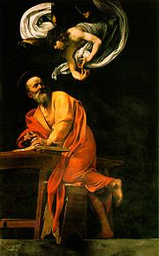

| Левий Матфей Материал из Википедии — свободной энциклопедии |
|  Караваджо, «Призвание Апостола Матфея» |
Ле́вий Матфе́й (ивр. מתי, греч. Ματθαίος) — один из двенадцати апостолов (учеников) Иисуса
Христа, персонаж Нового Завета. По традиции, считается автором Евангелия от Матфея, написанного
на арамейском языке.
Упомянут в списках апостолов в Евангелии от Матфея (10:3), от Марка (3:18), от Луки (6:15), а также в Деяниях Апостолов (1:13). Иногда Евангелия его называют Левий Алфеев, то есть сын Алфея. Единственный достоверный факт, сообщаемый Евангелиями, то что Левий Матфей был мытарем, то есть сборщиком пошлин. В тексте Евангелия от Матфея апостол назван «Матфей мытарь», что возможно указывает на смирение автора, так как мытари глубоко презирались иудеями. Евангелие от Марка (2:14) и Евангелие от Луки сообщают о призвании Левия Матфея: « После сего [Иисус] вышел и увидел мытаря, именем Левия, сидящего у сбора пошлин, и говорит ему: следуй за Мною. И он, оставив все, встал и последовал за Ним. (Лк.5:27-29) » О дальнейшей жизни Матфея почти ничего не известно. По одним источникам, он проповедовал в Эфиопии, где и был замучен ок. 60 года; по другим, он был казнён за проповедь христианства в малоазийском городе Иераполис. Святой апостол и евангелист Матфей часто изображался на иконах и произведениях искусства. Три картины из жизни апостола кисти Караваджо принадлежат к выдающимся шедеврам живописи. |
Дни памяти и покровительство* В православном церковном календаре (по юлианскому календарю): 16 ноября и 30 июня (Собор Двенадцати апостолов).* В католическом: 21 сентября. * Евангелическом и англиканском: 21 сентября. Считается покровителем города Салерно (Италия), где хранятся его останки (в базилике Сан-Маттео); по одной из версий они были перевезены в Италию в X веке. Также считается покровителем бухгалтеров, таможенников, всех финансовых служб. |